Morphman
Introduction
I wouldn`t say that Morphman is essential to your studies, but if you already use Anki you might consider
using Morphman. It might seem scary at first, but I can help you set it up in 5 minutes, if you follow this
guide.
Here's a recap of all the cool things you can do with it:
- At any point during your studies you know exactly how many words you`ve learned.
- You know the exact percentage of a title you understand, helping you find something with the right difficulty for you.
- You can set the exact comprehension percentage of some material for your next study.
- You know the amount of words you need to learn, to reach your next goal, and Morphman will prioritize them automatically.
- You can filter those words by a master frequency list, making sure you still focus on the most frequent words in japanese, and not just the words used in a certain show.
Get the neccesary files
- Go to Anki
- Tools -> Add-ons -> Get Add-ons
- Type or paste the numbers below:
- Morphman : 900801631
- Mecab: 13462835

Close Anki, and reopen it, the add-ons are now installed. In the add-on window select "MeCab ..." and click on View Files
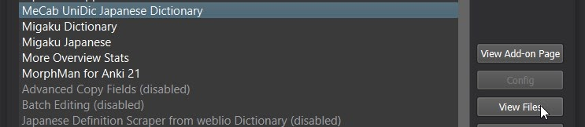Mecab is used to help Morphman analyze the sentences with better accuracy. There's a Mecab update that you can get here.
Drag and drop all the files in update archive to your Mecab folder (named 13462835), replace all the files when asked to.
- Download all the files from my Readability List here. We'll go over them on the next page, but at least you have everything ready.
- Download any deck that you want to study. It can be anime, manga, video games, your own deck. Decks that I made can be found here.
For this tutorial, I'm going to use two decks:
- the Core Anime Deck
- and the Deck for "A Silent Voice".
Again, close Anki and reopen it for Mecab to be updated.
What morphman needs
Morphman can build a database of words you know, but to do this you need to specify where they are.
Morphman doesn't analyze decks, it analyzes fields. So you need to know which field to look at, because analyzing a field where you have some english text won't do anything. You want to analyze the field with the japanese sentence or word that you've learned. You just need to know which note type that field is.
If you're unsure about note style, field, cards and all that, go back to the Anki tutorial.
Note: Morphman is for words, not Kanji. You can't use it on a Kanji deck, simply because single kanji are not words.For Morphman to work, you need to tell it which cards to analyze. For this, you need to know the note type of the card. But Morphman doesn't analyze the whole card, only a field so you also need to know which field of that note type to analyze. Basically, where you have the sentence or word in japanese.
You can analyze more than one note type, which we'll do in this tutorial, but each time you just need to need to know 2 things:
- Your note type
- The name of the field you want to analyze
If you want to only analyze your cards, that's all you need to know.
If you wish to modify your cards, so they can be reorganized in +1 order , you need to have a field where Morphman will put the word you don't know.
Morphman preferences depend on the name of YOUR NOTE STYLE and YOUR FIELDS , so don't copy my settings exactly.
Which note type?
Go to the browser mode B. You can see the list of your note types on the left, and if you click on it, you'll see which notes are in there.
Now, let's say that I have just finished the Core Anime Deck, and I want Morphman to tell me how many words I already know. In this case the note type I'll use is "Japanese Core Anime Vocabulary".
You can also go directly to manage note type Ctrl+Shift+N, and to check the name of the note type you're using.
Which field to analyze?
In this case, my sentence is in the field called "Expression".
That's for this note type only. For the other note types, the field that you want to analyze could be named Front, Word, Morph, etc.
Just click on the name of the field and copy it, so you know there won't be a spelling mistake when you have to write it.
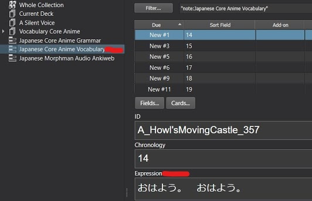 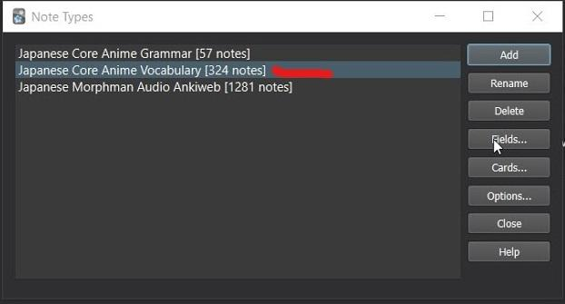 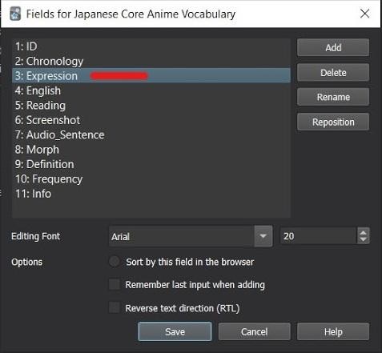Configure Morphman
Press Ctrl + O to open the settings window.
Note filter
- Note Type: Pick your note type from the list. In my case, it's "Japanese Core Anime Vocabulary".
- If you want Morphman to only use some specific cards from that note type, tag those cards, and put the name of that tag in that column.
- Put the name of the field you want to analyze. No typos, that's why I said you could copy from the browser. Paste or write it here. Mine is "Expression".
- Pick "Japanese Mecab ..." as your Morphemizer. We didn't download it for nothing.
- Check the Read box, if you want Morphman to collect data only from the cards, to build a database of your knowledge. That's what we want to use Morphman for afterall.
- Check the Modify Box if you want Morphman to reorganize your cards in +1 order. I didn`t check it here, because The Core Anime deck is already in +1 order, Morphman will mess around with the cards and we don't want that for this deck. If you're using the tango decks, you probably don't need to change the card order either. We'll do it with the deck for A Silent Voice below.
- Click apply
- K: Number of Known words (Ex ね and ねぇ count as 1 word)
- V: Number of Known words - with iterations (Ex ね and ねぇ count as 2 words)

Now, the only thing you have to do is recalc Ctrl+M your database. You'll see the number of your known words change at the top of Anki.
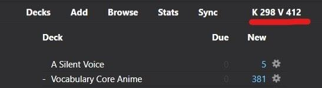 Note that the deck or mecab may change between the moment I write this tutorial and the time you do it, so the numbers may be different.Morphman counts words in two ways:
Now, that I know how many words I know, I want to keep studying with the Deck for A Silent Voice.
Morphman can analyze more than one field at a time, so we`ll do just that. The process is the same, you need to know the field and the note type to analyze.
When you, go back to Morphman's option Ctrl+O and click on Clone to add another line.
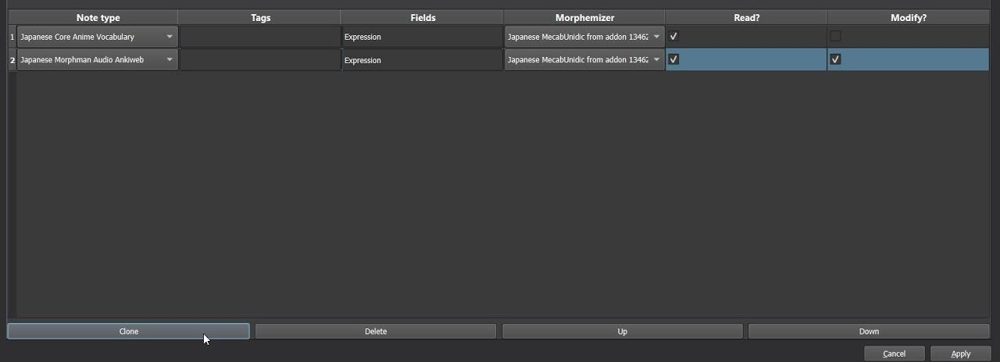The deck for A Silent Voice is in chronological order. To change the order, this time you need to check the modify box. So, you'll be able see the sentences with only one unkown word, they are called i+1.
We'll see in the next section of the tutorial how to be more precise with the order by using frequency lists.
Let's check out the rest of the options because we need them in order to modify the order of the cards.
Extra Fields
I just said that Morphman can reorder any deck in a +1 manner, but to do that you need to have a field where that +1 word (the word that you don't know) is going to go.
This is required for every note type where you have checked the modify box.In addition to that field, you can also create more fields where Morphman will automatically write some data. It's optional.
You need to tell Morphman in which field the information is going to go by simply writing it in the boxes.
- Focus morph (*). This is where the unknown word of your sentence goes. (By default, it's focus, I named my field "Morph", so that's what I'm putting this here).
- Index is basically Morphman's order, the higher the score, the sooner you'll see the card, but you have the due column for that anyway.
- The next 4 columns tell you how many unknown words there are in your note and what they are. The unmatures are the words you have seen but don't know very well yet.
- Unknown frequency can be useful. It tells you how many times in your collection the "Morph" word appears. When I say in your collection, it only applies to the decks you analyze with Morphman. This number has nothing to do with the outside frequency files, it only applies to your present database in Anki.
- Focus morph POS, I found it useful when making my core2k deck. It tells you the grammatical nature of your "Morph". Same Morph can have differents ones, this specifies which one you're studying. Problem is that it's written in Japanese.
If you want to add a field to your note type, you can go to Manage Note Types Ctrl+Shift+N.
Pick the note type you want, click on Fields..., and then Add.
Name your field. You can put the same name in the Extra Fields tab in Morphman's options.
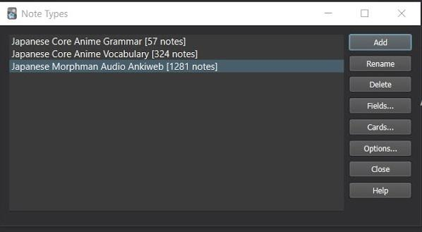 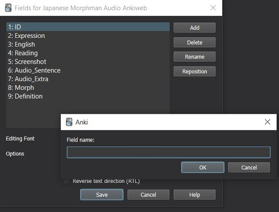General
Let's get pratical and win some time with our studies. The example below is if I haven`t learned anything before using the "A Silent Voice" deck.
For this screeshot, I use the advanced browser add-on to see more columns in the browser and created the UnknownFreq field in the note type (see Extra Fields above).
Couple of observations:
- Cards are organized by Due Date here. Without using a frequency list, Morphman will order words by frequency of appearence in your collection. In this case, this means 何 appears 93 times in "A Silent Voice", な appears 75 times and so on.
- I don't have 0T cards as I don't know anything. So 1T cards are first. More than 1T cards are at the bottom, because you're not ready to learn them.
- You can see that the sentences are just one word. (Expression column). Some sentences are longer but they are names put in brackets.
- Those cards should be tags are mm_tooShort, but I changed the options to show you this ones first. 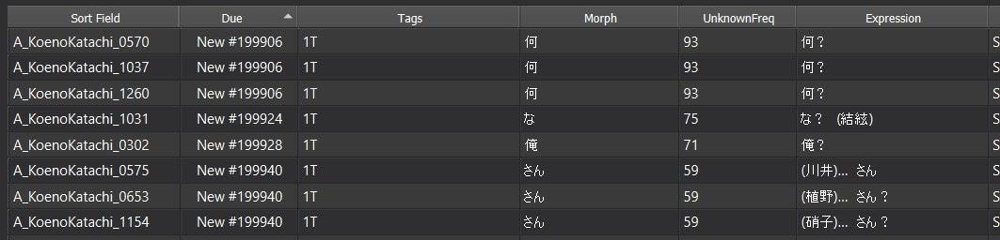
- Now, my first card should be "A_KoenoKatachi_0570" where I'd learn 何.
- I pass the card. The next one should be "A_KoenoKatachi_1037". But it's the same morph : 何. So maybe I don't want to lose time to see that card because, I`ve already picked a card I'm gonna use it to learn that word.
- So if I want to move on to learn な and change my second card instead to be A_KoenoKatachi_1031, use this option: 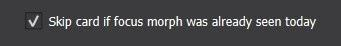
Maybe you didn't see this morph today, but you still don't want to learn additional 0T for 何 cards when you already have one designated for that, you can check the first two boxes as well. The difference is wether or not 何 would be consider as Fresh or Mature morph.
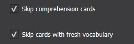- Include all missing morphemes, will add morphemes to your frequency list that weren't included because of your study plan settings. See next section for that.
- You can choose to ignore morphemes that are categorized as grammar points.
- You can ignore what's in the brackets in your sentences. So if it's a word you don't know but it's in the brackets, Morphman won't count that word as a Morph. This option may unlock cards as 1T if names are in the brackets like in the last 3 sentences in my example above. If you are using add-ons like Migaku for pitch accent or analyzing a field where you have furigana, you may want to check the brackets options.
- In case some names are not in the brackets, you can set proper nouns as known. So you won't have to learn names of characters of towns.
- Do you remember that if you fail the cards too many times, they will become leeches? You can ignore those cards as well.
Click Apply and you are done here.
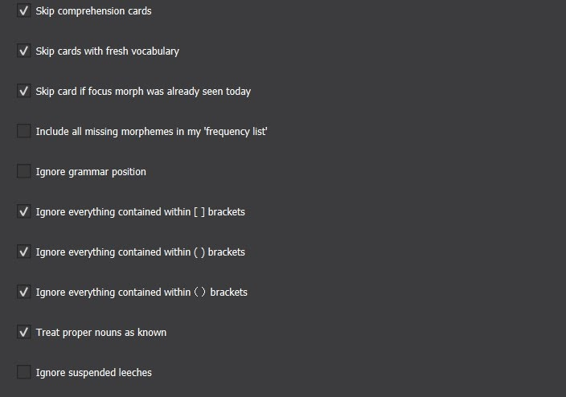Morphman's config.py
There's one last thing to configure. Go to your add-ons window, select Morphman, and click on View files. That takes you the Morphman add-on directory.
Open the "Morph folder" and open config.py with any notepad.
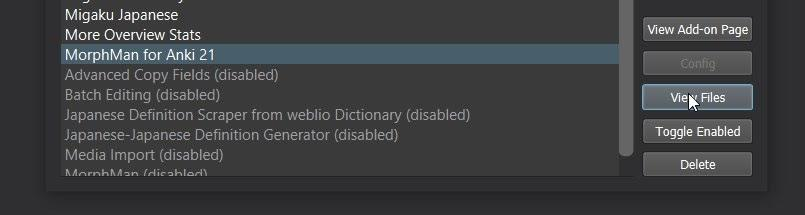 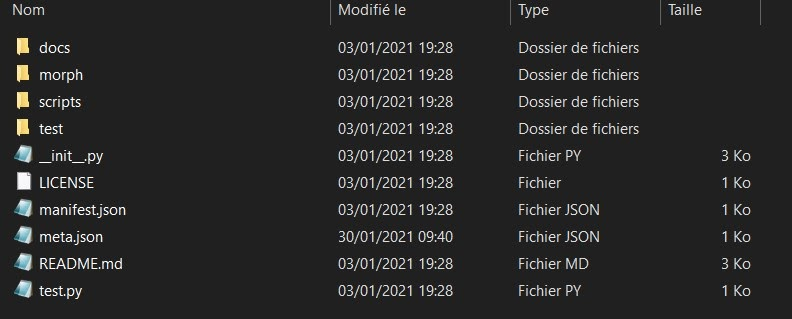 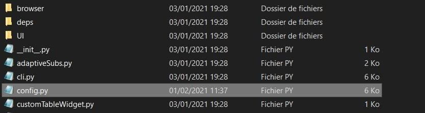Comprehension and fresh
So those comprehension and fresh morph we mentioned above, you can say to Morphman which ones they are, and how long it takes for a fresh morph (known) to become a comprehension (mature) morph. You should leave those settings by default anyway, since it's recommended to skip those extra cards.
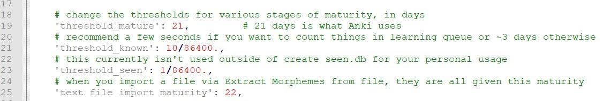Pick cards with a good sentence length
We all know that length matters, especially when you have to study japanese sentences.
You can set the threshold for what is too short or too long. If the sentence doesn't fit it will get some minus points and will not be prioritizez, but they won't get suspended or anything. Morphman will just prioritize cards with proper length.
Some prefer longer sentences to practice their listening skills since sentences in immersion are usually quite long. I like shorter sentences, because it makes it easier to recognize the morph that I don't know, and memorize it. It also makes the reviews faster.
Find a balance that works for you. The numbers here apply to the number of Morphs (words) not characters.
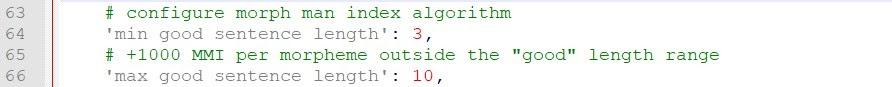Prioritize words on your frequency list
We'll learn about frequency list in the next section. You need to use it, if you want to prioritize learning words in that file.
So make sure the number here is high enough so that they are prioritized higher in your queue list.
# Maximum bonus a card can get by its position in frequency.txt.
# A card with an unknown morph that matches the first word in frequency.txt will get all this bonus.
# A card with an unkown morph that matches some of the last words in frequency.txt will get almost no bonus
'frequency.txt bonus' : 100000,
Morphman for reviews
Pick the right settings
Maybe you'll change your setttings once in a while, that's okay, I did too, before I found the ones that worked for me.
I use Anki just to be reminded of the vocab I know and keep it fresh in my head, but the real studying or practice takes place during immersion. It's by watching an anime, or most likely playing jrpgs that I really see my progress, or when I'm reading, and I don't need to check the definition of a word because I saw the card not too long ago. So I make sure I spend as little time as possible doing reviews to make them efficient. Short length, good cards to memorize, skip all the redundant 0T out of the process, disregard proper nouns and words in brackets.
But that's just me. As always, figure out what works best for you.
Pick the right card
Unless you make your own cards, good chance you'll use subs2srs decks for anime. If that's the case, some cards are not that great because the progress is automatic. The screenshots don`t help, the audio is missing at the beginning or the end of the sentences...
So when doing reviews, simply press L. It will show you all the others cards that have the same Morph. Use the preview button to check them out.
If you find a better card that the one Morphman gave you, select it, you can use Edit - Learn now Ctrl + Alt + N or Cards - Reposition, and press Ok. I use the latter since there is a shortcut in the header.
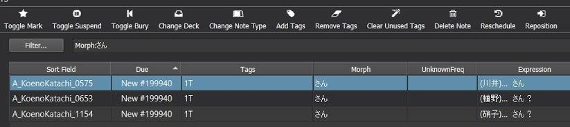Update your database
Morphman doesn't update your database of known words automatically. You need to do it manually. Press Ctrl + M to do so.
Maybe not very useful to do it every time you`ve learned a new card, but I do it at the end of my reviews.
So do your new cards for the day, recalc the database. In the header of the main screen you'll see the K and V numbers change.
Why two numbers ? It's because of iterations of the same word. So ね and ねぇ are the same word but written a bit differently. Think of "hey" and "heyyy".
If that was the only know word your numbers would be this; K 1 (ね) and V 2 (ね and ねぇ).
Overall the way of counting words is not perfect, so don't stress about it too much. When updating Mecab for example, your numbers may be lowered, but it doesn't mean that you`ve lost knowledge, it just means there's better accuracy.
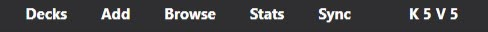